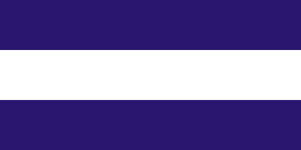

About Me
My name is Godwin Bassey and I am a dentist that lives in Nigeria. I am currently rounding up my mandatory one-year internship in the Unversity of Benin Teaching Hospital which took me away from my hometown of Calabar, Nigeria.
Calabar, Nigeria

Calabar is the capital city of Cross River State, Nigeria. It was once the Capital of Nigeria but is currently a quiet suburban city that is known for its good roads and security.